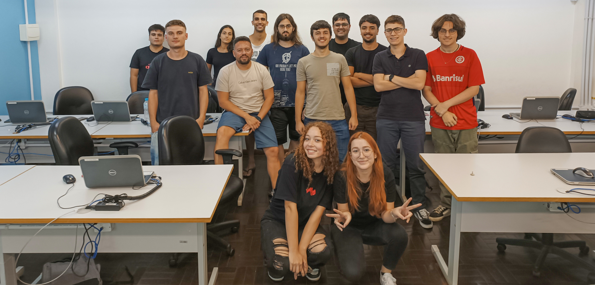

Quem Somos
Fizemos parte da turma DEV3N222 no Senac Tech, do curso Técnico em Desenvolvimento de Sistemas.
O Desenvolvedor é o profissional que programa sistemas computacionais, seguindo as normas e especificações da lógica e das linguagens de programação bem como a modelagem, implementação e manutenção de banco de dados. Executa o desenvolvimento a manutenção e testes de programas de computador documentando o processo, adotando normas técnicas, de qualidade, de saúde, de segurança do trabalho e preservação ambiental no desempenho de sua função.
Trabalha em equipes globais, estabelece relações interpessoais construtivas e compreende o contexto e cultura em que está inserido, demonstrando capacidade propositiva e criativa.
Atua em organizações públicas e privadas de qualquer segmento, tais como da área do comércio, de serviços, da indústria, de consultoria, de ensino e pesquisa, por meio da prestação de serviços autônomos, temporários ou contrato efetivo.
O Técnico em Desenvolvimento de sistemas habilitado pelo Senac tem como Marcas Formativas: domínio técnico-científico, visão crítica, atitude empreendedora, sustentável, colaborativa, atuando com foco em resultados. Essas Marcas Formativas reforçam o compromisso da Instituição com a formação integral do ser humano, considerando aspectos relacionados ao mundo do trabalho e ao exercício da cidadania. Essa perspectiva propicia o comprometimento do aluno com a qualidade do trabalho, o desenvolvimento de uma visão ampla e consciente sobre sua atuação profissional e sobre sua capacidade de transformação da sociedade.
Professor

Válter Brandenburger Vasconcellos
Com formação em Tecnologia em Design Gráfico e especialização em Webdesign e Tratamento Digital de Imagens pela Universidade Luterana e Universidade Dom Bosco, são mais de 15 anos de docência voltada a tecnologia e ensino técnico. Atualmente docente do Senac Tech, SEG (Sistema de Ensino Gaúcho) e sócio-fundador da agência MentalTec.
Desenvolvedores
Chay Renner
Sou estudante de TI fullstack e estagio na Verticais, empresa de tecnologia que atua desde o financeiro até a robótica em automações. Tenho grande vontade de me especializar em front-end. Gosto de jogar valorant no tempo livre e fazer lives também. Twitch: chay_aa.
Douglas
Atualmente cursando TDS(Tecnio em Desenvolvimento de Software) no Senac, tambem tenho conhecimento basico em Python e photoshop. Tenho 17 Anos e estou no Terceino ano do ensino medio
Eduardo Cappellari Rizzardi
Tenho certificado de curso Pacote Office 120h presencial no senac tech, atualmente fazendo curso tech em desenvolvimento de sistemas e estágiando na área da t.i a 9 meses.
Enzo Andrade
Atualmente estudo para obter os conhecimentos de um desenvolvedor front end,buscando atuação na área da programação, em paralelo faço um curso técnico em análise e desenvolvimento de sistemas na escola SENAC TECH RS, referência em tecnologia. Gosto de praticar e competir volei nas horas vagas.
Felipe Verdade Didio
Estudante de tecnologia, quase formado em Design Gráfico pela Uniritter, sócio-fundador da Agência HannaH Estratégias de Marketing, Pai da Maria Eduarda e do Theo.
Felipe Sereno Soso
Mestre em Educação pela Pontifícia Universidade Católica do Rio Grande do Sul (2021), Licenciado em Física pela Universidade de Passo Fundo (2017). Foi estagiário acadêmico (2017) como professor de Física na rede estadual de ensino de Passo Fundo/RS. Trabalhou como físico assistente na FM - Serviços de Física Médica de 2016 a 2017. Tem experiência nas áreas de Física e Educação, com ênfase em Tecnologias Digitais de Informação e Comunicação (TDICs) e Educação a distância. Após a conclusão da pós-graduação venho me dedicando a adquirir conhecimentos em programação, tanto no que se refere ao desenvolvimento de softwares em geral quanto em possíveis interfaces com a educação.
Glauber Martini dos Santos
Estudante de desenvolvimento de sistemas, com bacharelado em administração de empresas, passagem pelo técnologo de gestão do turismo, já tendo trabalhado na área administrativa de escritório de advocacia, empresa de perícias médicas judiciais, multinacional Cargill, e atualmente na área administrativa de locadora de automóveis, em busca de colocação na área de técnologia da informação.
Gustavo Diego Kruger
Senhor Jesus Cristo, Filho unigênito, Senhor Deus, Cordeiro de Deus, Filho de Deus pai, Vós que tirais os pecado do mundo, tende piedade de nós. Vós que tirais o pecado do mundo, acolhei a nossa súplica. Vós que estais à direita do Pai, tende piedade de nós.
Ketllyn Andressa Motta Leite
Iniciei minha trajetória com o técnico em nutrição e me formei em 2022, atualmente estou embarcando em uma nova jornada emocionante como técnico em desenvolvimento de sistenas no Senac Tech. Além dos estudos, trabalho como SDR em uma empresa de tecnologia, estou animada para ver onde minha jornada me levará a seguir!
Lorenzo
Olá, meu nome é Lorenzo Padoin tenho 19 anos, sou uma pessoa muito determinada no que faço sempre dando meu 100%, meus hobbys são jogar futebol, vídeo game, cozinhar, música, academia e animais. Sou estudante do Senac tech faço o curso de técnico em desenvolvimento de sistemas, trabalho numa empresa de freelancer e estou procurando meu espaço no mundão.
Rafael Kaipper Backes
Com atual formação em andamento no Curso técnico em desenvolvimento de sistemas do Senac e com experiencia inclusive com suporte técnico, tendo assim experiência com atenção e atendimento ao cliente.
Thiago
Meu nome é Thiago, tenho 18 anos (No momento), curso Desenvolvimento de sistemas no Senac Tech, meus hobbys são, desenhar, tocar instrumentos e ouvir música, eu ainda não tenho experiencia profissional no mercado de trabalho, e gostaria de entrar no mercado de trabalho, em uma boa empresa, e ser bem remunerado, trabalhando como Front end, possuo conhecimento em java, MySQL e html, sei fazer modelos conceituais e sou criativo na hora de criar telas.

Contato